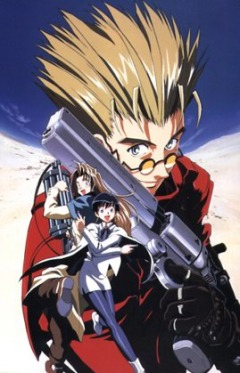
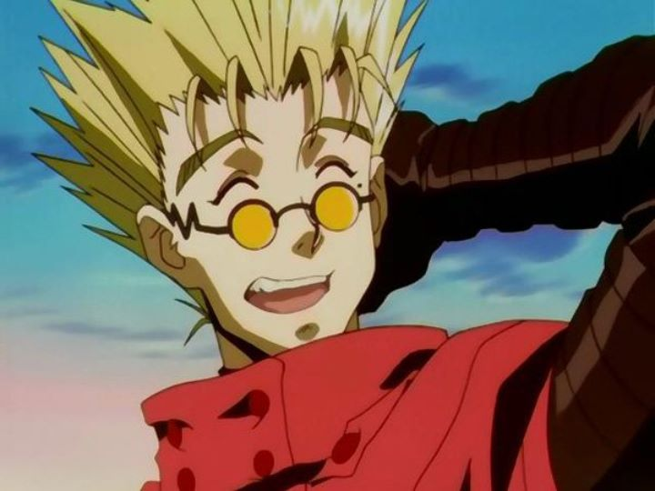

Trigun
|

|

|

|
Trigun (Japanese: トライガン, Hepburn: Toraigan) is a Japanese manga series written and illustrated by Yasuhiro
Nightow. It was first serialized in Tokuma Shoten's shōnen manga magazine Monthly Shōnen Captain from March 1995 to
December 1996, until the magazine ceased its publication; its chapters were collected in three tankōbon volumes. The
series continued its publication in Shōnen Gahosha's seinen manga magazine Young King OURs, under the title Trigun
Maximum, from October 1997 to March 2007. Shōnen Gahosha republished the Trigun chapters in two volumes, and
collected the Trigun Maximum chapters in 14 volumes.
Set on the fictional planet known as No Man's Land, the plot follows Vash the Stampede, a famous gunman who is
constantly fighting bounty hunters seeking to obtain the immense bounty on his head. As the narrative progresses,
Vash's past is explored. Trigun originated from Nightow's fascination with Western movies. Nightow wanted Vash to be
different from cowboys in Western movies by avoiding killing enemies and instead exploring the characters involved
in each story arc.
Trigun was adapted into a 26-episode anime television series by Madhouse; it aired on TV Tokyo from April to
September 1998. An anime feature film, Trigun: Badlands Rumble, premiered in Japan in April 2010. A second anime
television series adaptation produced by Orange, titled Trigun Stampede, premiered in January 2023. In North
America, both manga series have been licensed by Dark Horse Comics. The anime series was first licensed by Geneon
Entertainment and started broadcast in the United States, as part of Cartoon Network's Adult Swim programming block,
in 2003; the series was later licensed by Funimation.
In 2009, Trigun Maximum won the Best Comic category at the 40th Seiun Awards. Critical response to the manga has
been generally positive based on Vash and his friends' actions and relationships, as well as the handling of action
scenes. However, critics disliked Vash's predicament in regards to his pacifism and the plot being hard to
understand. The anime series was similarly positively received.
Media
- Manga
- Anime 1998
- Film
- Anime 2023
| Episode list |
| Episode # |
Title |
Directed by |
Original air data |
| 1 |
"The $$60 Billion Man"
Transliteration: "Roppyaku-oku Dabudoru no Otoko" (Japanese: 600億$$の男)
|
Satoshi Nishimura |
April 1, 1998 |
| 2 |
"Truth of Mistake" |
Shigeki Awai |
April 8, 1998 |
| 3 |
"Peace Maker" |
Shigehito Takayanagi |
April 15, 1998 |
Tell us about yourself